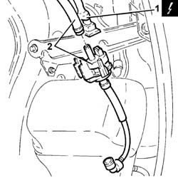

1080E26 FUEL VAPOUR CUT OUT VALVE FROM FILTER - R.R.
- Path
- Procedures > 10 ENGINE > 1080 EMISSION CONTROL SYSTEM > 1080E EVAPORATION CONTROL SYSTEM > 1080E26 FUEL VAPOUR CUT OUT VALVE FROM FILTER - R.R.
- Kind
- repair procedure (removal / refitting; the operation number is the code)
- Applies to
- engines: 3.0 V6, 3.2 V6; all production periods
- Interactive page
- https://sloeber94.github.io/elrnDB-lThss/en/#/214210
Applies to: engines: 3.0 V6, 3.2 V6; all production periods
 Removing
Removing
 Refitting
Refitting- Position the vehicle on the lift.
See in Op. 5530B10 BATTERY - R.R.
- Make sure that the ignition key is in the OFF position, then disconnect the negative battery terminal (-).
See in Op. 4450B10 Front WHEEL (one) - R.R.
- [7055B39]
See in Op. 1080E20 active charcoal filter for fuel vapours - r + r
1. Disconnect the electrical connection from the fuel vapour cut out solenoid valve.
 | Description | Connector |
|---|---|---|
1 | Fuel vapour recovery solenoid valve | L010 |
2. Disconnect the pipes and remove the fuel vapour cut out solenoid valve from the filter.

Applies to: engines: 3.0 V6, 3.2 V6; all production periods
Refitting
Removing- Place the fuel vapour cut out solenoid valve back in its housing and connect the pipes.
- Connect the electrical connection to the fuel vapour cut out solenoid valve.
| Description | Connector |
|---|---|---|
. | Fuel vapour recovery solenoid valve | L010 |
See in Op. 1080E20 active charcoal filter for fuel vapours - r + r
- [7055B39]
See in Op. 4450B10 Front WHEEL (one) - R.R.
- Connect the negative battery terminal (-).
- Remove the vehicle from the lift.